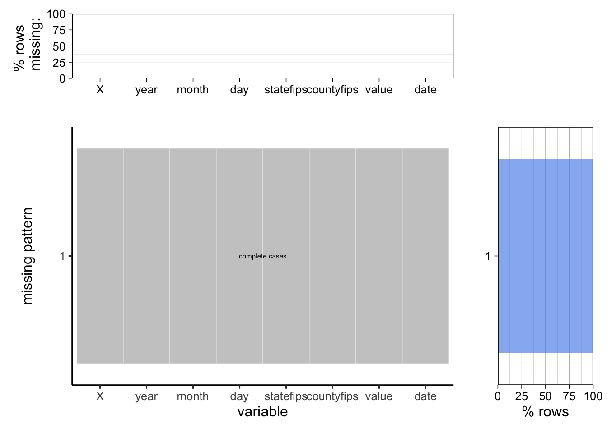
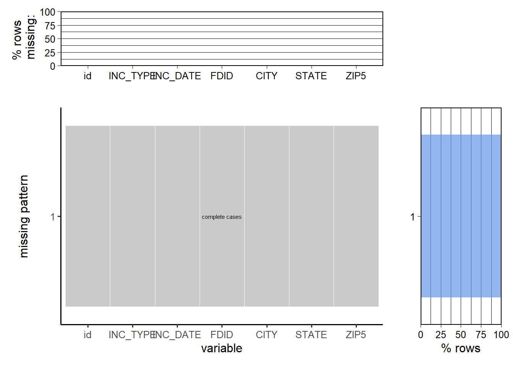

Chapter 3 Data
3.1 Sources
We have two resources of data: The CDC United States Drought Monitor and Annual NFIRS Public Data.
- CDC United States Drought Monitor (usdm)
The CDC United States Drought Monitor (usdm) describes the drought status on the county level for the contiguous United States. It includes weekly United States Drought Monitor (USDM) data from 2000-2016 provided by the Cooperative Institute for Climate and Satellites - North Carolina. This data is used by the CDC’s National Environmental Public Health Tracking Network to generate drought measures. The time period of the data set is January 4, 2000 – December 27, 2016. The data itself is gathered from more than 350 contributors around the country, each week authored by one lead climatologist. The drought conditions are determined each week from measurements of climatic, hydrologic and soil conditions as well as reported impacts and observations.
To be more specific, the dataset includes the following variables:
| Variable | Name | Data Type |
|---|---|---|
| year | year of observation | int |
| month | month of observation | int |
| day | day of observation | int |
| statefips | state FIPS identifying code | int |
| countyfips | county FIPS identifying code | int |
These variables were all read as ints, and were changed to character data as needed once the dataframe was read.
- Annual NFIRS (National Fire Incident Reporting System) Public Data
The annual National Fire Incident Reporting System (NFIRS) Public Data Release files are provided by the U.S. Fire Administration’s (USFA) National Fire Data Center (NFDC). The NFIRS is a reporting standard that fire departments use to uniformly report on the full range of their activities, from fire to emergency medical services (EMS) to equipment involved in the response.
We use the data between 2004 and 2016. For each year, the data consists of three parts: fires, incidents, and addresses, coming from 3 separate text files.
For incidents, we have variables:
| Variable | Name | Data Type |
|---|---|---|
| STATE | state | str |
| FDID | fire department ID | int |
| INC_DATE | date of incident | int |
| INC_NO | number of incident | int |
| EXP_NO | exposure number | int |
| TYPE_INC | type of incident | int |
For fires, we have variables:
| Variable | Name | Data Type |
|---|---|---|
| STATE | state | str |
| FDID | fire department ID | int |
| INC_DATE | date of incident | int |
| INC_NO | number of incident | int |
| EXP_NO | exposure number | int |
For the address information, we have variables:
| Variable | Name | Data Type |
|---|---|---|
| STATE | state | str |
| FDID | fire department ID | int |
| INC_DATE | date of incident | int |
| INC_NO | number of incident | int |
| EXP_NO | exposure number | int |
| CITY | city of incident | str |
| STATE_ID | state of incident | str |
| ZIP5 | zipcode | int |
3.2 Cleaning/Transformation
- CDC United States Drought Monitor (usdm)
For the CDC United States. Drought Monitor (usdm) data set, considering the dataset size and completeness, we filtered our data in the range of 2004 to 2016. The dataset is quite clean itself. Thus, we did a few add-on steps to make our data manipulation easier.
- Add a column that formats date to be in the form of “yy-mm-dd”: we add a column that combines ‘year’, ‘month’, and ‘date’ as strings (characters) then converts to date.
- Match the value with drought condition as a categorical variable: the value column ranges from 0-4 and are defined as follows: D0: Abnormally Dry; D1: Moderate Drought; D2: Severe Drought; D3: Extreme Drought; D4: Exceptional Drought; No Drought is noted as 9. We added a column to match the value with the corresponding drought condition as a categorical variable to make the data set more understandable.
- Assign each row to 1 in the count column: adding a count column could help us in counting the number of rows by assigning each row of value 1.
- Annual NFIRS (National Fire Incident Reporting System) Public Data
- Create a unique ID for each entry: The unique identifier (primary key) for these incident-associated records is the combination of the State, fire department ID, incident date, incident number, and exposure number (STATE, FDID, INC_DATE, INC_NO, and EXP_NO), according to the NFIRS Design Documentation, Page 8.
- DataFrame of fires was left-joined with DataFrame of incidents, which was left joined with DataFrame of address information, all on the primary key ‘id’.
- For consistency, we put all addresses in uppercase.
- Dropped duplicates for the merged DataFrame.
- Filtered the merged dataset only to include INC_TYPE within:
| INC_TYPE | Description |
|---|---|
| 14 | Natural vegetation fire |
| 140 | Natural vegetation fire, other |
| 141 | Forest woods or wildland fire |
| 142 | Brush or brush-and-grass mixture fire |
| 143 | Grass fire |
At the end, we have a wildfire dataset that contains ID, INC_TYPE, FDID, CITY, STATE, and ZIP5 as columns for further analysis.
3.3 Missing Value Analysis
- CDC United States Drought Monitor (usdm)
According to the documentation of usdm data set, “No data were lost or omitted during calculation. All data that were available were used. Data will be updated on an ad hoc basis, when necessary”. We also checked for missing values by calling the isnull() and isna() functions to confirm that the data set does not miss any values.
To further confirm, we used plot_missing function from library redav to check the missing percentage and pattern.

We can see from the graph that there are no missing values in the dataset and every variable is complete.
- Annual NFIRS (National Fire Incident Reporting System) Public Data
We identified: during the preprocessing, in the combined incidents file there were 3693 missing values for the ‘STATE’ variable; in the fires data portion, there were 1125 missing values for the ‘STATE’ variable, and so not all incidents or fires had a full primary key or unique identifier. Considering the large size of the data set, millions of rows from 2004 - 2016, it was sufficient for our analysis to merge the dataset without addressing missing components of the primary key.
NFIRS is also not reflective of the total number of wildfires in the United States, as is reported by the agency. Rather, analysis in NFIRS should be focused on changes, or trends in the number of reported wildfires over time and space. For this reason, ignoring incomplete IDs was deemed adequate, as the exact number of wildfires in NFIRS is not as important as the magnitude and changes in the data over time.
We further verify after preprocessing that our wildfire dataset is complete below. 
We can see that the data, after preprocessing, was complete.